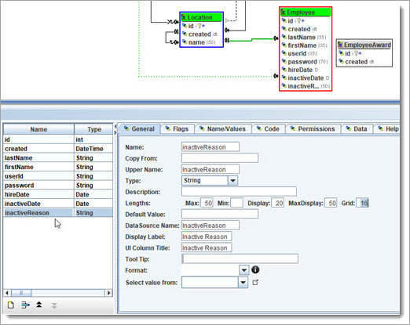
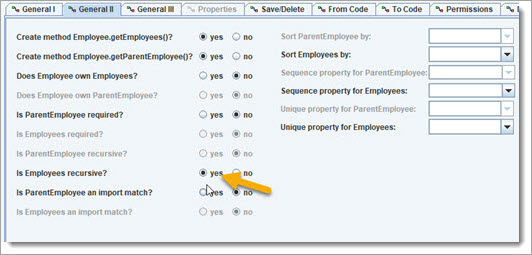
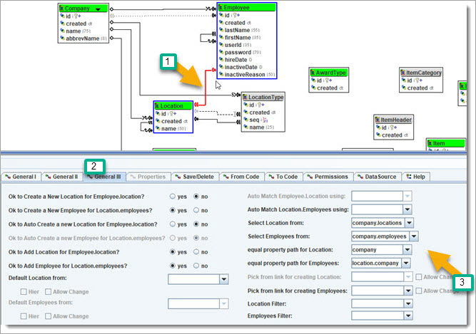
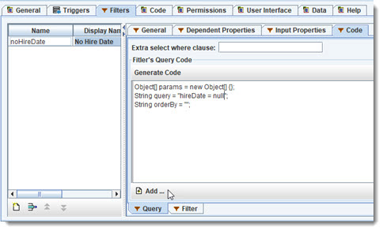
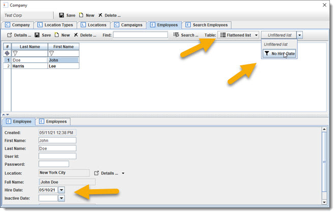

Go ahead and create an employee for "ABC Company" main location with name "Mary Smith".
Let us make a few changes to Employees before moving on. Add new properties for hireDate, inactiveDate, inactiveReason.

Make inactiveReason visible only when there is an inactiveDate.
Make the Employee recursive by recreating a self-reference/link, so we can know the management structure. Use the link button to do this, then go to "General II" tab
and set "Is Employees recursive?" to yes.

We also need to make sure that Employees belong to the same Company.

Also, make the Link Location.Employees recursive.
 ReGen & Run: make sure we can get "John Doe" some help from a new Employee.
ReGen & Run: make sure we can get "John Doe" some help from a new Employee.

Ok, the Location.employees being recursive is not going to work for us. For example an Employee that works for a manager under a different location. Instead, we need to have Company.employees as a recursive/hierarchy, and Locations.employees as the Employees that work from that Location.
We will undo a couple of things and move forward from there.
Go back to the Location.employees link and set "Is Employees recursive" to no.
Go back to the Employee.employees link and change the name from "parentEmployee" to "managerEmployee".
Create a One2Many link for Company.Employees. Set "Does Company owns Employees" to true. "Is Employees recursive" should be yes.
Also, go back to "General I" tab and set the "Cache Size:" for Employees to 100. This sets the amount of Company.employees collections (Hub) that will use cached. More
on this later.
Delete the Link for Company.searchEmployee - and we will next recreate it using "Company.Employees" as the property path. Right click
Company, "Create new Search Link ..." and select "Company.employees".
Make the following change to the Location.employees link: click "General III" tab, and set "Select Location from" to "company.locations".
 Review: we just did some rewiring, so that we have "a Company owns a
hierarchy of Employees", and Employees "have a Location".
Review: we just did some rewiring, so that we have "a Company owns a
hierarchy of Employees", and Employees "have a Location".

 CheckPoint #4 was created here.
CheckPoint #4 was created here.
Here is what Company is looking like now.

Couple of notes: the demo application is being generated straight from the model. The code generators have all the information to do this, including the custom code that we added.
The recursive "Company.employees have employees" has multiple ways for viewing the list. The tree view is used for Hierarchy List, and the Flattened list shows all
Employees in the hierarchy as a single list.

Before moving on, let us look at the model.

This shows how the Locations
and Employees are set up so that they are under the same Company.
BizRule: we want a list of Employees that do not have a HireDate assigned.
This can be done using a simple query to get the list. But if we want to have a list that is kept real time updated, then we can create a Filter that will do this.
Click on the Employee Object, select the "Filter" tab, click "New" button, and make the following Filter.

Go to the "Dependent Properties" and add "HireDate".
Go to the Code tab, and add the following for the Query. This is the query it will use to initially load
from datasource.

Now add the Java code.

... also fix a typo, change "HireDate == null" to "hireDate == null".
Regen and rerun:
Now give "John Doe" a hireDate. Change the Table to "flattened", and choose "No Hire" from filter dropdown.

That's a simple Filter, but it gives you the idea of how it works. A filter can be created on anything, and it will be dynamically
updated.